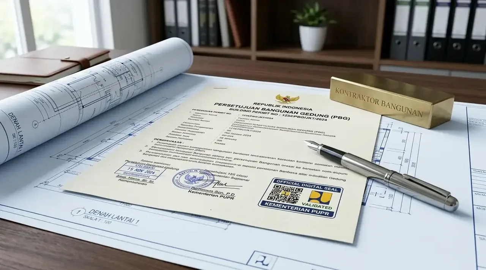

Bagaimana Cara Bandingkan Biaya Urus IMB Manual vs Online Secara Rinci?
Perbandingan antara pengurusan IMB manual vs online dinilai dari transparansi tarif, eliminasi pengeluaran non-prosedural, serta efisiensi jam kerja operasional.
Dalam skema pengurusan IMB manual (konvensional), pemohon harus mendatangi dinas teknis atau Dinas Penanaman Modal dan Pelayanan Terpadu Satu Pintu (DPMPTSP) secara berulang kali. Secara kasat mata, biaya resmi yang tertera mungkin tampak serupa. Namun, pengurusan manual memuat pengeluaran terselubung (hidden costs) yang cukup besar, seperti penggandaan berkas cetak A3/A1 berkali-kali, biaya transportasi tim operasional, hingga potensi pungutan liar di tingkat birokrasi lapangan. Hal ini secara kumulatif membengkakkan pengeluaran di luar anggaran resmi yang disiapkan perusahaan.
Sebaliknya, pengurusan perizinan PBG secara online melalui portal SIMBG mengusung asas transparansi penuh. Pemohon cukup mengunggah berkas digital tanpa perlu mencetak puluhan jilid dokumen fisik pada tahap awal. Sistem akan mengalkulasikan tarif retribusi PBG secara otomatis berbasis variabel parameter teknis. Tidak ada celah untuk transaksi ilegal atau biaya tambahan yang tidak terukur, sehingga tim keuangan perusahaan dapat memprediksi arus kas secara presisi sejak awal pengajuan.
Berdasarkan Laporan Akuntabilitas Layanan Publik Sektor Konstruksi 2025 dari Kementerian PUPR, pengurusan legalitas gedung secara online berbasis SIMBG terbukti memangkas total pengeluaran administratif pengembang hingga 38% dibandingkan metode manual tradisional. Sementara itu, Data Evaluasi Perizinan Bangunan Indonesia 2026 mencatat bahwa 82% pimpinan perusahaan memilih menyerahkan pengurusan perizinan digital kepada pihak ketiga yang tepercaya. Melalui kerja sama dengan Kontraktor Bangunan, pengurusan perizinan Anda dieksekusi secara profesional dan akuntabel.
- Transparansi 100%: Tagihan retribusi terbit dalam bentuk SKRD resmi dengan kode bayar virtual account bank daerah.
- Paperless Tahap Awal: Menghemat jutaan rupiah biaya cetak dokumen blueprint A3/A1 sebelum tahap konsultasi teknis final.
- Monitoring Real-Time: Status verifikasi dokumen dapat dipantau setiap hari tanpa perlu antre fisik di kantor dinas.
Berapa Sebenarnya Tarif Retribusi PBG yang Wajib Dibayarkan?
Tarif retribusi PBG dihitung berdasarkan perkalian antara Luas Total Lantai, Indeks Lokal, Indeks Fungsi, Indeks Prasarana, dan Harga Satuan Retribusi.
Pemerintah telah menetapkan formula baku dalam perhitungan retribusi PBG untuk menggantikan tarif IMB lama. Besaran angka akhir yang harus disetorkan ke kas daerah sangat bergantung pada kompleksitas bangunan yang Anda dirikan. Bangunan fungsi keagamaan atau hunian sederhana memiliki indeks yang lebih rendah, sedangkan bangunan fungsi komersial, pabrik, gudang, atau gedung bertingkat tinggi dikenakan indeks fungsi yang disesuaikan dengan skala risikonya.
Kalkulasi resmi menggunakan rumus acuan sebagai berikut:
Melalui portal online SIMBG, kalkulasi ini terjadi secara sistemik setelah dokumen teknis Anda diverifikasi oleh Tim Ahli Bangunan Gedung (TABG) atau Tim Profesi Ahli (TPA). Keunggulannya, Anda mendapatkan Surat Ketetapan Retribusi Daerah (SKRD) resmi dengan kode bayar bank daerah tanpa ada manipulasi angka. Kejelasan ini menjamin bahwa seluruh anggaran yang Anda keluarkan masuk 100% sebagai penerimaan negara yang sah.
Jika Anda membutuhkan kalkulasi cepat mengenai estimasi nilai retribusi untuk bangunan gedung pabrik, ruko, atau kantor Anda, silakan hubungi tim ahli kami untuk melakukan peninjauan awal. Anda dapat memilih fasilitas Konsultasi Perizinan via WA bersama Kontraktor Bangunan untuk memperoleh simulasi hitungan secara rinci.

Pemeriksaan lembar gambar kerja arsitektur dan struktur untuk memenuhi parameter verifikasi portal SIMBG online dan penetapan SKRD retribusi.
Mengapa Biaya Jasa Konsultan Perizinan Lebih Menguntungkan Perusahaan?
Biaya jasa konsultan perizinan memberikan imbal balik efisiensi karena mencegah penghentian proyek, menjamin kelengkapan gambar teknis, dan menghemat waktu eksekutif.
Secara sekilas, mengurus PBG/IMB secara mandiri melalui online tampak gratis di luar retribusi daerah. Namun, fakta di lapangan menunjukkan bahwa mayoritas berkas yang diunggah mandiri oleh tim internal perusahaan sering kali mengalami penolakan (rejection) atau revisi berulang oleh dinas teknis. Penyebab utamanya adalah ketidaksesuaian dokumen teknis arsitektur, kalkulasi struktur yang belum tersertifikasi Penanggung Jawab Bangunan Gedung (SKA/STRA), atau diagram MEP yang tidak memenuhi kriteria baku. Setiap revisi membuang waktu berminggu-minggu, yang berarti menunda jadwal konstruksi dan memicu kerugian finansial akibat idle cost di lokasi proyek.
Di sinilah nilai strategis dari mengalokasikan anggaran untuk jasa profesional. Konsultan perizinan berpengalaman bertindak sebagai jembatan antara kebutuhan bisnis Anda dan regulasi tata kota. Kami menyusun seluruh berkas cetak biru (blueprint), perhitungan teknis struktur, serta dokumen lingkungan sesuai standar yang dipersyaratkan sistem SIMBG.
| Variabel Perbandingan | Pengurusan Mandiri (Internal Company) | Jasa Konsultan Perizinan (Kontraktor Bangunan) |
|---|---|---|
| Keahlian Berkas Teknis | Rawan salah format / Tidak ada STRA | Disusun & disahkan oleh Ahli Arsitek & Sipil Berlisensi |
| Risiko Revisi Berulang | Sangat Tinggi (Bisa menunda 2-4 bulan) | Sangat Rendah (Verifikasi kelayakan sebelum diunggah) |
| Potensi Biaya Tersembunyi | Tinggi (Akibat trial-error & ongkos jalan) | Terkontrol & Transparan (Tercover dalam satu kontrak) |
| Pengurusan SIMBG Online | Membutuhkan trial & error pemahaman sistem | Ditangani tim operator ahli yang terbiasa dengan SIMBG |
| Kepastian Jadwal Terbit | Tidak menentu | Terjadwal & Terlampir dalam SOP Pekerjaan |
| Layanan Tambahan | Hanya mengurus PBG dasar | Terintegrasi dengan SLF (Sertifikat Laik Fungsi) |
Mempertimbangkan risiko penundaan operasional yang bernilai jutaan rupiah per hari, menggunakan biaya jasa konsultan perizinan dari Kontraktor Bangunan adalah keputusan bisnis yang jauh lebih efisien. Kami memastikan aset Anda siap dibangun dan dioperasikan tanpa ancaman sanksi administratif maupun penyegelan di kemudian hari.
Kapan Waktu Terbaik untuk Memulai Pengurusan PBG/IMB Online?
Waktu terbaik untuk memulai pengurusan PBG online adalah pada tahap prafungsi perencanaan arsitektur, sebelum aktivitas fisik konstruksi dimulai di lapangan.
Sesuai Undang-Undang Cipta Kerja dan PP No. 16 Tahun 2021, Persetujuan Bangunan Gedung (PBG) wajib dimiliki sebelum pemilik bangunan memulai kegiatan pelaksanaan konstruksi. Mengabaikan aturan ini dapat berakibat fatal: mulai dari penerbitan Surat Peringatan (SP 1 hingga SP 3), penghentian sementara kegiatan pembangunan, pembongkaran paksa, hingga denda administratif paling banyak 10% dari nilai total bangunan gedung.
Memulai proses perizinan saat gambar konseptual arsitektur telah selesai memungkinkan tim teknis untuk melakukan penyelarasan dengan Kesesuaian Kegiatan Pemanfaatan Ruang (KKPR) atau Zoning Regulation daerah setempat. Hal ini mencegah terjadinya pembongkaran ulang struktur akibat pelanggaran Garis Sempadan Bangunan (GSB) atau Koefisien Dasar Bangunan (KDB). Pengurusan yang dilakukan di awal juga memberikan ketenangan pikiran bagi para investor dan manajemen perusahaan.
Mengapa Kontraktor Bangunan Merupakan Mitra Perizinan & Konstruksi Terbaik?
Kontraktor bangunan menawarkan solusi terpadu mulai dari perancangan arsitektur, legalitas PBG/SLF, hingga eksekusi pengerjaan fisik bangunan bergaransi.
Kami memahami bahwa kelancaran legalitas adalah pintu masuk utama bagi keberhasilan suatu proyek pembangunan. Sebagai penyedia layanan konstruksi dan perizinan terintegrasi, Kontraktor Bangunan tidak hanya bertindak sebagai pengurus dokumen, tetapi juga sebagai penasihat teknis yang memastikan setiap jengkal desain bangunan Anda efisien secara biaya dan memenuhi kaidah keselamatan struktur.
Tim kami terdiri dari arsitek tersertifikasi, insinyur struktur, serta spesialis hukum perizinan yang berpengalaman menangani puluhan proyek komersial, industri, dan residensial di berbagai daerah. Kami menjamin transparansi biaya tanpa ada ongkos terselubung, serta memberikan komitmen pendampingan hingga Sertifikat Laik Fungsi (SLF) diterbitkan.
Jangan biarkan aset bernilai miliaran rupiah milik perusahaan Anda terhambat oleh kendala birokrasi perizinan yang rumit. Percayakan seluruh tahapan legalitas dan fisik konstruksi Anda kepada ahli yang tepat. Dapatkan layanan konsultasi menyeluruh dan penawaran biaya yang efisien dengan melakukan Konsultasi Perizinan via WA bersama Kontraktor bangunan sekarang juga.
Pertanyaan yang Sering Diajukan (FAQ)
Kesimpulan Praktis
Bila kita bandingkan biaya urus IMB manual vs online, sistem online SIMBG terbukti jauh lebih hemat, transparan, dan terukur secara finansial. Pengeluaran untuk tarif retribusi PBG kini dapat dikalkulasikan secara pasti, sementara risiko biaya tak terduga dan penundaan waktu dapat ditiadakan secara signifikan. Mengombinasikan portal digital pemerintah dengan keahlian dari konsultan perizinan profesional adalah strategi terbaik untuk mengamankan legalitas gedung secara efisien.
Pastikan proyek pembangunan aset korporasi Anda berdiri di atas landasan legalitas yang kokoh dan bebas dari sanksi hukum di masa depan. Ambil langkah cepat untuk mempercepat operasional bisnis Anda hari ini. Hubungi tim ahli kami untuk simulasi biaya dan pendampingan perizinan penuh dengan memilih Konsultasi Perizinan via WA dari Kontraktor Bangunan.